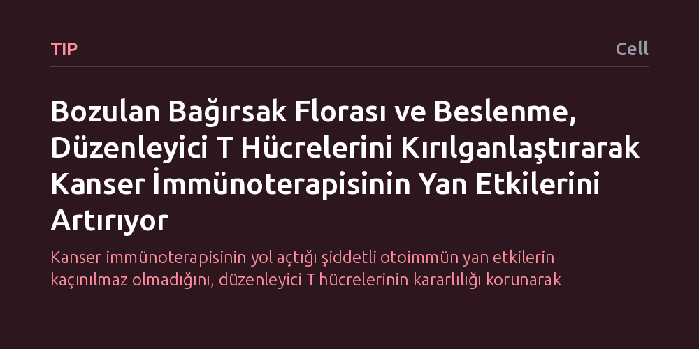

TIP · Cell · 2026-10-23
Araştırmacılar, kanser immünoterapisinde görülen bağışıklık kaynaklı yan etkilerin yaşam tarzı ve mikrobiyota ile bağlantısını inceledi. Beslenme ve floradaki bozulmaların düzenleyici T hücrelerini zayıflatarak doku hasarını artırdığı, bu hücrelerdeki interferon sinyali engellendiğinde ise tümörle mücadele zayıflamadan yan etkilerin önlendiği gösterildi.
Kanser immünoterapisinin yol açtığı şiddetli otoimmün yan etkilerin kaçınılmaz olmadığını, düzenleyici T hücrelerinin kararlılığı korunarak tümörle mücadeleden ödün vermeden bu hasarların önlenebileceğini gösteriyor.

Kanser tedavisinde son yılların en etkili yaklaşımlarından biri olan immün kontrol noktası blokajı, bağışıklık sisteminin kanser hücrelerine karşı geliştirdiği doğal savunma frenlerini kaldırarak çalışır. Bu tedavi sayesinde bağışıklık sistemi tümörleri yabancı bir tehdit olarak tanıyıp yok edebilir. Ne var ki frenlerin serbest kalması, bağışıklık sisteminin bazen kendi vücut dokularına da saldırmasına ve bağışıklık ilişkili yan etkiler olarak adlandırılan ciddi otoimmün hasarların ortaya çıkmasına yol açabilmektedir.
Bu yan etkilerin neden bazı hastalarda çok şiddetli görülürken bazılarında daha hafif seyrettiği onkoloji dünyasının en önemli sorularından biridir. Hastaların beslenme alışkanlıkları ve bağırsak florasındaki farklılıkların bu duyarlılığı nasıl etkilediği, tedavinin başarısını ve hastanın yaşam kalitesini doğrudan ilgilendiren kritik bir halkayı oluşturmaktadır.
Araştırmacılar, yaşam tarzı etkenlerinin bağışıklık sistemindeki hassas dengeleri nasıl bozduğunu anlamak için bağışıklık sisteminin bekçileri konumundaki düzenleyici T hücrelerine odaklandı. Bu hücreler normal koşullarda diğer bağışıklık hücrelerini denetler, iltihabı sınırlar ve bağışıklık sisteminin vücudun kendi organlarını tahrip etmesini engeller.
Çalışmada beslenme biçimindeki ve mikrobiyotadaki değişimlerin düzenleyici T hücreleri üzerindeki etkileri deneysel modellerde incelendi. Araştırma ekibi özellikle hücreler arasındaki iletişimi sağlayan interferon-gama sinyal yolağını takip ederek, bu sinyalin düzenleyici hücreler üzerindeki baskısını ve dokuda yerleşik sitotoksik T hücrelerinin tepkilerini ölçtü.
Elde edilen bulgular, beslenme ve mikrobiyota kaynaklı bozulmaların interferon-gama sinyali üzerinden düzenleyici T hücrelerini kırılgan hale getirdiğini gösterdi. Görevi bağışıklığı frenlemek olan bu koruyucu hücreler zayıfladığında, dokuda yerleşik sitotoksik T hücreleri aşırı aktif hale gelerek sağlıklı dokulara zarar veren toksik tepkiler üretmektedir.
Araştırmanın en dikkat çekici sonucu ise bu hasarın tersine çevrilebilir olmasıdır. Düzenleyici T hücrelerindeki interferon-gama sinyali seçici olarak engellendiğinde, doku dengesi yeniden sağlandı ve bağışıklık kaynaklı yan etkiler belirgin biçimde azaldı. En önemlisi, bu müdahale bağışıklık sisteminin tümör hücreleriyle savaşma kabiliyetine hiçbir zarar vermedi.
Bu keşif, kanser immünoterapisinde ortaya çıkan bağışıklık kaynaklı yan etkilerin tedavinin kaçınılmaz bir bedeli olmadığını ortaya koymaktadır. Düzenleyici T hücrelerinin kararlılığını korumak, tümörle mücadele gücünü düşürmeden toksisiteyi sınırlamak için umut verici bir terapötik hedef sunmaktadır.
Klinik açıdan bu veriler, gelecekte mikrobiyotayı ve beslenmeyi düzenleyen yaklaşımların ya da düzenleyici hücreleri koruyan hedefe yönelik moleküler tedavilerin immünoterapiyle birlikte kullanılabileceğine işaret etmektedir. Böylece hastaların hem kanserle etkin biçimde mücadele etmesi hem de tedaviye bağlı ağır otoimmün hasarlardan korunması mümkün olabilecektir.